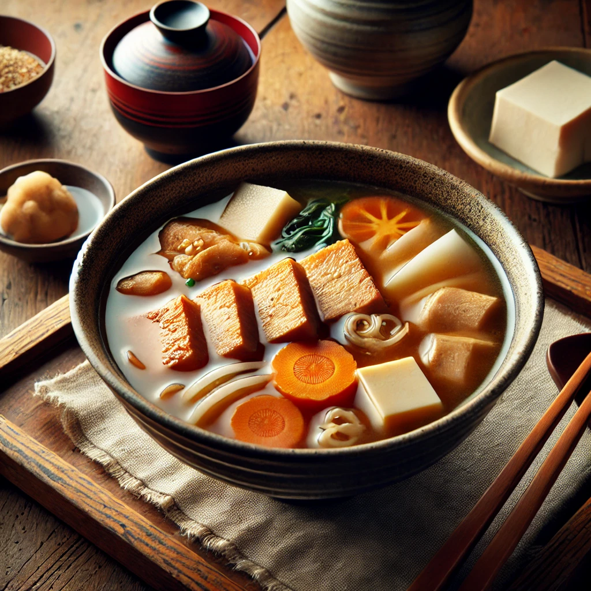
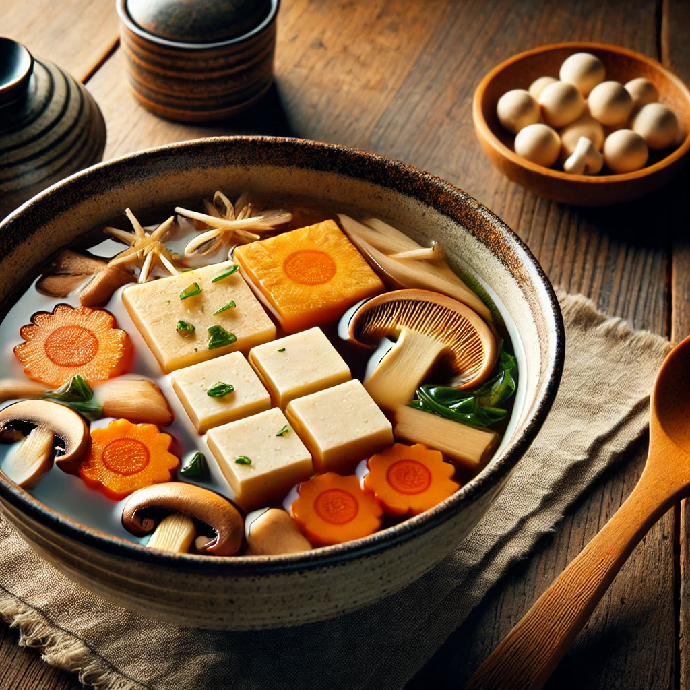
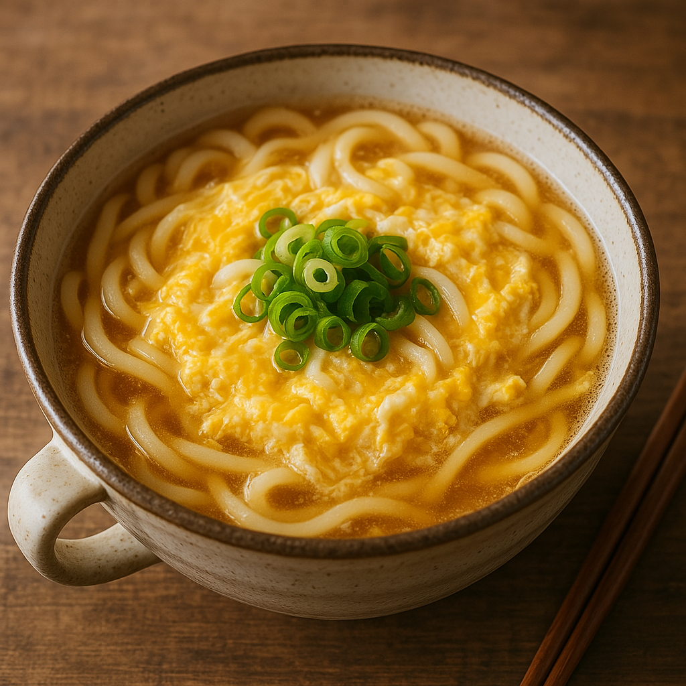
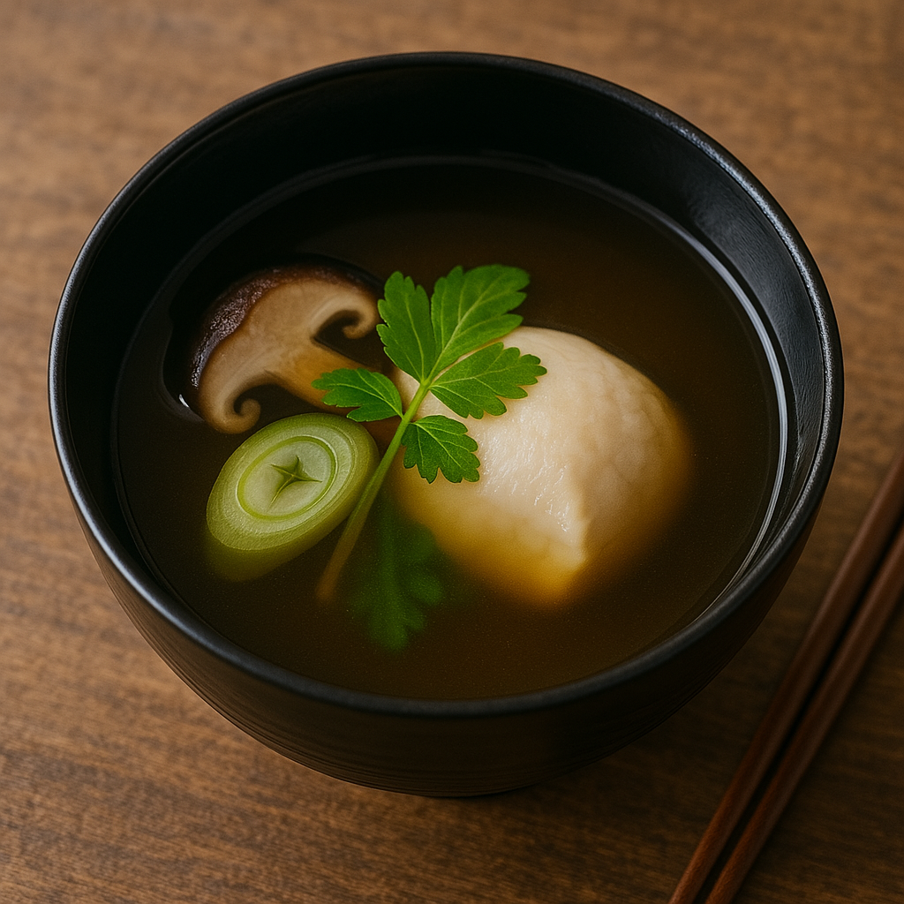

Showa-era soups, like hearty tonjiru (pork miso soup) and delicate osuimono (clear broth soup), offer a nostalgic taste of home-cooked comfort, with many more varieties to explore.

豚汁 (Pork Miso Soup)
A hearty miso-based soup with pork, daikon, carrots, konnyaku, and tofu.

けんちん汁 (Vegetable Tofu Soup)
Stir-fried tofu, root vegetables, shiitake mushrooms, and kombu-based dashi are combined to make a soup with a soy sauce or miso taste.

卵とじうどん (Udon Noodles with Egg Drop Soup)
A comforting udon soup with fluffy beaten eggs in a hot dashi broth seasoned with soy sauce and mirin.

お吸い物 (Clear soup)
A light dashi-based soup seasoned with soy sauce and salt, often containing fish, seafood, or mushrooms, commonly served at traditional meals.